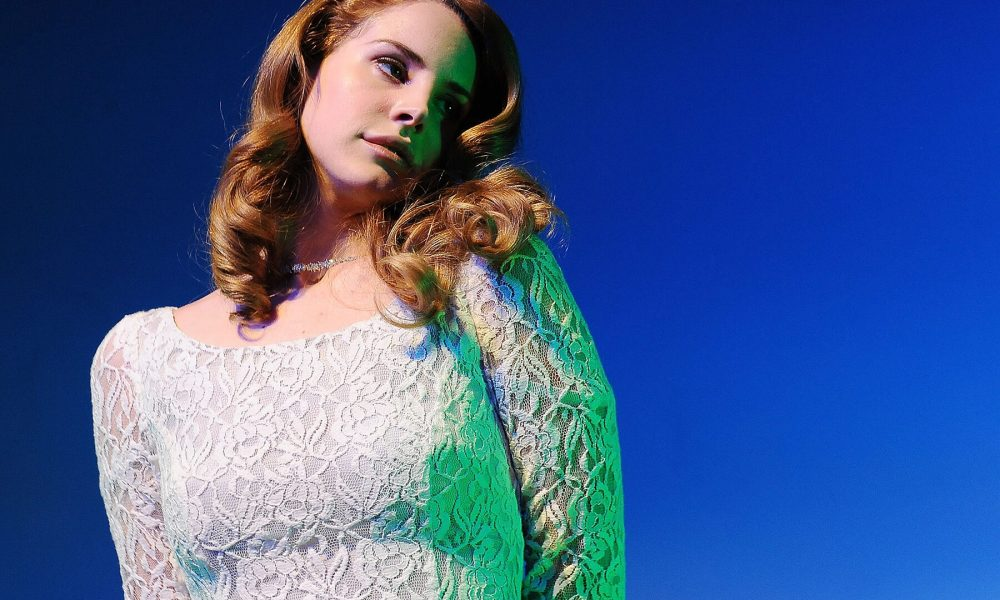

Lana Del Rey
 Американская певица, автор песен и поэтесса. Её музыка была отмечена критиками за кинематографический стиль, озабоченность трагическими отношениями и меланхолией, а также за отсылки к американской поп-культуре, в частности, 1950-х и 1960-х годов.Звучание песен Дель Рей было названо «голливудским сэдкором».
Про тексты своих песен в одном из интервью Дель Рей сказала: «Они не должны быть популярными. Это ведь не поп-музыка. И я никому ничего не должна, делаю, что хочу и когда хочу. Надеюсь, что люди не будут меня просить ни о чём подобном. Поэтому никакой ответственности ни перед кем я не ощущаю <…> Я очень эгоистична, и всё, что делаю, я делаю для самой себя. Я это слушаю, и я получаю наслаждение, испытывая драйв. Хочу плыть в океане под свои собственные песни. А остальным не нужно их слушать и думать о них, это не их дело».
Журналисты издания Billboard назвали исполнительницу «арт-поп-волшебницей». В журнале Time считают, что основой её музыки является «кинематографичность» с наложенным поверх неё возвышающейся хип-хоп вокальной каденцией. Дель Рей приписывают множество стилей.